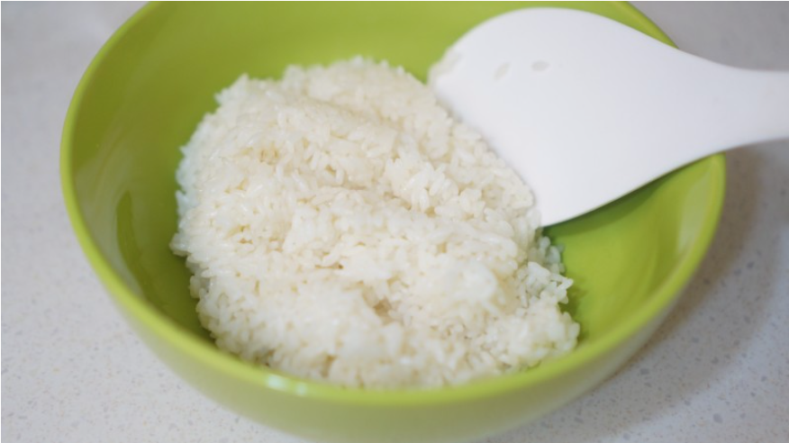
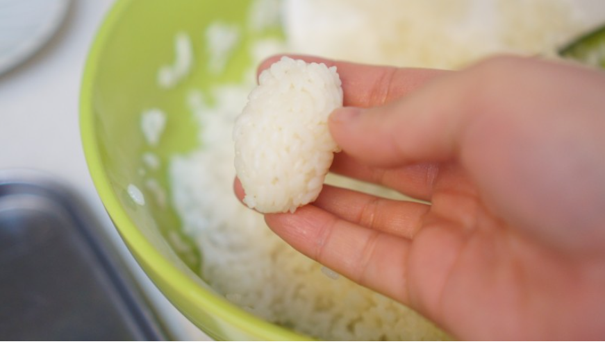
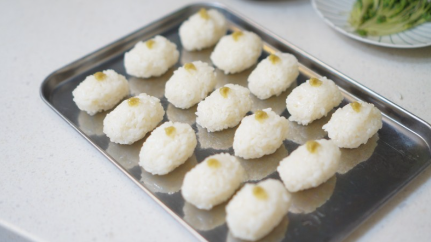
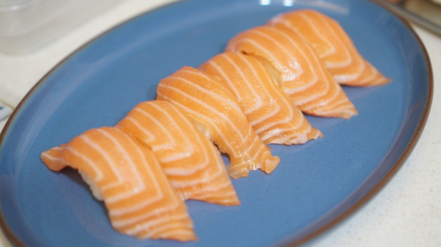
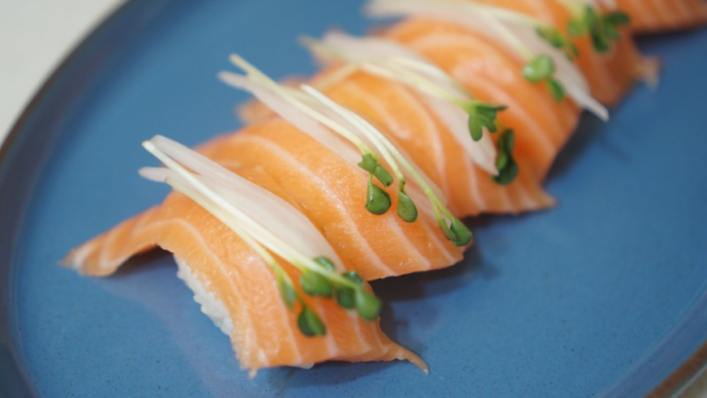
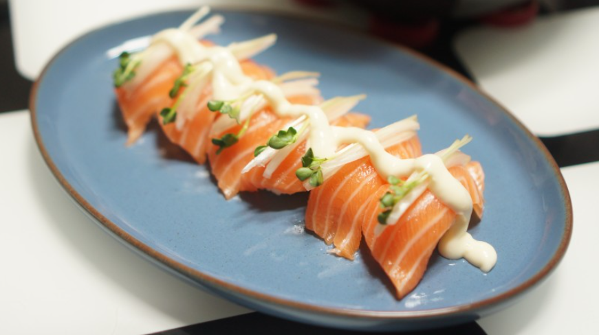

|

Step1: Mix rice with vinigar
Tips Do it before rice gets cold!
|

Step2: Mold rice into a round shape
Tip Use your palm to make easier!
|

Step3: Put wasabi on top of the mold rice
Tip The portion of wasabi depends on your own!
|
|

Step4: Gently top salmon slices
Tip The length should be logner then the rice so it doesn't fall
|

Step5: Garnish with horse raddish!
Tip Just a little. Too much garnish distracts salmon's taste!
|

Step6: it's ready! Serve!!
Tip Enjoy with miso soup!
|